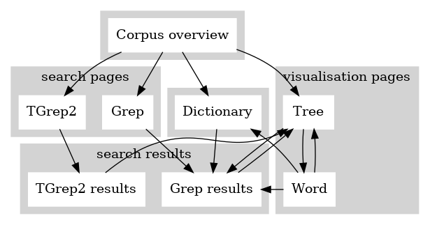

Oxford NINJAL Corpus of Old Japanese (ONCOJ)
検索インタフェースについて
1 はじめに
2021年末に新しいコーパス検索インタフェースが公開され、現在それが本コーパスにオンラインでアクセスするためのツールになっている。そのインタフェースには ここからアクセスできる。
ONCOJ 検索インタフェースは以下のことに役立つ：
- (i)
- コーパス全体のブラウザーとしての利用（テキストのID番号を検索表現として使い、内容にアクセスすることを含む）、
- (ii)
- コーパスの辞書機能の利用、
- (iii)
- 二つの検索言語（Grep と TGrep2）によるコーパス検索、
- (iv)
- 二つの表示方式（ Tree と Word）によるアノテーションの閲覧。
検索インターフェースでは、本コーパスの製作中ファイルに直接アクセスできる。注意：全コーパスの安定したヴァージョンは定期的に（およそ6か月間おきに）用意されている。そのデータはリリース・ダウンロードのウエブサイトで得られる。
2 コーパスの概要ページとインターフェース・マップ
コーパス概要ページは検索インタフェースの入り口である。インターフェース内のどのページからも ‘Corpus overview’ のボタンをクリックすると、概要ページに飛べる。インターフェース全体の構造とインターフェース内のナビゲーションは Figure 1 に示してある。Grep と TGrep2 の検索ページや Dictionary のページを通して検索結果のページに行き、検索のヒットを選ぶと、そのテキストが樹形図の形で表示される「ツリー・ページ」にたどりつく。 ツリー・ページ（第 6.1 章）では一つのテキスト全体の直接構成部関係がノードとノードの間の関係として示される。その中のどのノードでもクリックすると、その情報に基づく Grep 検索が行われる。ツリー・ページからワード・ページ （第 6.2 章）に飛ぶと、同じテキスト単語のレベルでの詳しい情報が表示され、それから辞書の見出しの閲覧や単語に対する Grep 検索ができる。ワード・ページとツリー・ページの間は往来が自由である。
Figure 1: インターフェース・マップ

コーパス概要ページには Grep と TGrep2 の検索ページや辞書のページへのリンクがある。 それに加えて、テキスト ID 番号を記入するためのボックスもあり、以下の 第 3 章 でその機能を詳しく説明する。それから、コーパスに集積されている全てのテキストが出典によって列挙してあり、各々の項目が実際のテキストへのリンクになっている。
3 テキストの ID 番号による内容アクセス
コーパス概要ページ、ツリー・ページ、ワード・ページのどれにもテキストの ID 番号による検索を行うための ID ボックスがある。コーパス概要ページを開く段階では ID ボックスは空になっている。ツリー・ページやワード・ページの場合、表示されているテキストに対応する ID 番号が ID ボックスに入っている。 ID ボックスの内容は、自由に書き換えることができる。書き換えてから [ENTER]を押すと、新しい ID 番号に対応するテキスト表示のページ（ツリー・ページ或いはワード・ページ）に飛ぶ。もし書き換えた内容に対応するテキストが存在しなければ、空のテキスト表示ページに飛ぶ。あるテキストの表示ページへ飛ぶには、そのテキストの ID 番号と完全に一致する必要がある。ワード・ページの ID ボックスの内容を書き換えると、新しいテキストのワード・ページに飛ぶ。ツリー・ページ（又はコーパス概要ページ）の ID ボックスに新しい ID 番号を書き込むと、新しいテキストのツリー・ページに飛ぶ。
4 ソース・データの形式について
検索インタフェースの機能（特に検索のオプション）を活かすためには、ソース・データの形式の理解が必要である。本コーパスの全体は一つのファイルに収められ、各テキストの形態素解析データと直接構成部データがひとまとめの分析情報になっていて、テキストとテキストの間に空の一行が置かれている。一つのテキストの分析情報の第一行としては、そのテキストの形態素の連なり（’word yield‘）が示してある。これは ‘=N(" ’ と ‘ ")’ の間に表示される。実際の分析情報は第二行から始まり、各単語に一行の分析データが順番に設けられ、単語自体がその行の最後に示してある。分析データというのは、各々の単語に対して直接構成部関係を示すツリー構造においての root （根）から leaf （葉）までのパースを示す。一つのテキストの分析情報の最後の行では、そのテキストの ID 番号のノードが示してある。
データ形式の例として、コーパスの最初のテキストの分析情報を (1) で示す：
- (1)
=N(" mi ato tukuru isi no pibiki pa ame ni itari tuti sape yusure titi papa ga tame ni moro pito no tame ni ")
"CP-FINAL","IP-SUB","0@美阿止都久留","*"
"CP-FINAL","IP-SUB","PP;@2","NP","PP","NP","IP-REL","NP-OB1","N","PFX-HON","L000035","PHON","mi"
"CP-FINAL","IP-SUB","PP;@2","NP","PP","NP","IP-REL","NP-OB1","N","N","L050877","PHON","ato"
"CP-FINAL","IP-SUB","PP;@2","NP","PP","NP","IP-REL","VB-ADC","L031144a","PHON","tukuru"
"CP-FINAL","IP-SUB","PP;@2","NP","PP","NP","1@伊志乃比鼻伎波","*"
"CP-FINAL","IP-SUB","PP;@2","NP","PP","NP","N","L051130","PHON","isi"
"CP-FINAL","IP-SUB","PP;@2","NP","PP","P-CASE-GEN","L000520","PHON","no"
"CP-FINAL","IP-SUB","PP;@2","NP","N-DVB","L031497b","PHON","pibiki"
"CP-FINAL","IP-SUB","PP;@2","P-TOP","L000522","PHON","pa"
"CP-FINAL","IP-SUB","2@阿米爾伊多利","*"
"CP-FINAL","IP-SUB","PP;@4","NP","N","L050001a","PHON","ame"
"CP-FINAL","IP-SUB","PP;@4","P-CASE-DAT","L000519","PHON","ni"
"CP-FINAL","IP-SUB","VB-INF","L030170a","PHON","itari"
"CP-FINAL","3@都知佐閇由須礼","*"
"CP-FINAL","IP-ADV;@3","PP-OB1","NP","N","L050015","PHON","tuti"
"CP-FINAL","IP-ADV;@3","PP-OB1","P-RES","L000525a","PHON","sape"
"CP-FINAL","IP-ADV;@3","VB-EXC","L031842a","PHON","yusure"
"CP-FINAL","4@知知波波賀多米爾","*"
"CP-FINAL","IP-ADV;@5","NP-PRD","PP","NP","N","L050402","N;@1","L050641","PHON","titi"
"CP-FINAL","IP-ADV;@5","NP-PRD","PP","NP","N","L050402","N;@2","L051720","PHON","papa"
"CP-FINAL","IP-ADV;@5","NP-PRD","PP","P-CASE-GEN","L000503","PHON","ga"
"CP-FINAL","IP-ADV;@5","NP-PRD","N","L050063","PHON","tame"
"CP-FINAL","IP-ADV;@5","COP-INF","L031965","PHON","ni"
"CP-FINAL","5@毛呂比止乃多米爾","*"
"CP-FINAL","IP-ADV;@7","NP-PRD","PP","NP","N","L050486","ADJ-STM","L007011","PHON","moro"
"CP-FINAL","IP-ADV;@7","NP-PRD","PP","NP","N","L050486","N","L050046","PHON","pito"
"CP-FINAL","IP-ADV;@7","NP-PRD","PP","P-CASE-GEN","L000520","PHON","no"
"CP-FINAL","IP-ADV;@7","NP-PRD","N","L050063","PHON","tame"
"CP-FINAL","IP-ADV;@7","COP-INF","L031965","PHON","ni"
"ID","BS.1"
=N(" mi swo ti amari puta tu no katati ya swo kusa to sodar eru pito no pumi si ato dokoro mare ni mo aru kamo ")
"IP-MAT","0@弥蘇知阿麻利","*"
"IP-MAT","NP-SBJ","IP-REL","PP-SBJ","NP","IP-REL","PP","NP","NP","IP-REL","NP-PRD","N;@1","NUM;@1","L002003","PHON","mi"
"IP-MAT","NP-SBJ","IP-REL","PP-SBJ","NP","IP-REL","PP","NP","NP","IP-REL","NP-PRD","N;@1","NUM;@2","L002032","PHON","swo"
"IP-MAT","NP-SBJ","IP-REL","PP-SBJ","NP","IP-REL","PP","NP","NP","IP-REL","NP-PRD","N;@1","CL","L002033","PHON","ti"
"IP-MAT","NP-SBJ","IP-REL","PP-SBJ","NP","IP-REL","PP","NP","NP","IP-REL","NP-PRD","N-DVB","L030097b","PHON","amari"
"IP-MAT","NP-SBJ","IP-REL","PP-SBJ","NP","IP-REL","PP","NP","NP","IP-REL","NP-PRD","1@布多都乃加多知","*"
"IP-MAT","NP-SBJ","IP-REL","PP-SBJ","NP","IP-REL","PP","NP","NP","IP-REL","NP-PRD","N;@4","NUM","L002002","PHON","puta"
"IP-MAT","NP-SBJ","IP-REL","PP-SBJ","NP","IP-REL","PP","NP","NP","IP-REL","NP-PRD","N;@4","CL","L002015","PHON","tu"
"IP-MAT","NP-SBJ","IP-REL","PP-SBJ","NP","IP-REL","PP","NP","NP","IP-REL","COP-ADI","L031965","PHON","no"
"IP-MAT","NP-SBJ","IP-REL","PP-SBJ","NP","IP-REL","PP","NP","NP","N","L080239","PHON","katati"
"IP-MAT","NP-SBJ","IP-REL","PP-SBJ","NP","IP-REL","PP","NP","2@夜蘇久佐等","*"
"IP-MAT","NP-SBJ","IP-REL","PP-SBJ","NP","IP-REL","PP","NP","N","NUM;@1","L002008","PHON","ya"
"IP-MAT","NP-SBJ","IP-REL","PP-SBJ","NP","IP-REL","PP","NP","N","NUM;@2","L002032","PHON","swo"
"IP-MAT","NP-SBJ","IP-REL","PP-SBJ","NP","IP-REL","PP","NP","N","N","L052472","PHON","kusa"
"IP-MAT","NP-SBJ","IP-REL","PP-SBJ","NP","IP-REL","PP","P-CASE-COM","L000529","PHON","to"
"IP-MAT","NP-SBJ","IP-REL","PP-SBJ","NP","IP-REL","3@曾太礼留比止乃","*"
"IP-MAT","NP-SBJ","IP-REL","PP-SBJ","NP","IP-REL","VB-ADN","VB-STM","L030969a","PHON","sodar"
"IP-MAT","NP-SBJ","IP-REL","PP-SBJ","NP","IP-REL","VB-ADN","VAX-STV-ADN","L000024","PHON","eru"
"IP-MAT","NP-SBJ","IP-REL","PP-SBJ","NP","N","L050046","PHON","pito"
"IP-MAT","NP-SBJ","IP-REL","PP-SBJ","P-CASE-GEN","L000520","PHON","no"
"IP-MAT","NP-SBJ","IP-REL","4@布美志阿止止己呂","*"
"IP-MAT","NP-SBJ","IP-REL","VB-ADN","VB-STM","L031553a","PHON","pumi"
"IP-MAT","NP-SBJ","IP-REL","VB-ADN","VAX-SPST-ADN","L000015","PHON","si"
"IP-MAT","NP-SBJ","N","N;@1","L050877","PHON","ato"
"IP-MAT","NP-SBJ","N","N;@2","L050060","PHON","dokoro"
"IP-MAT","5@麻礼爾母阿留可毛","*"
"IP-MAT","ADJ-INF","ADJ-STM","L004072a","PHON","mare"
"IP-MAT","ADJ-INF","COP-INF","L031965","PHON","ni"
"IP-MAT","P-TOP","L000514","PHON","mo"
"IP-MAT","VB-ADN","L030125a","PHON","aru"
"IP-MAT","P-FNL-MPH","L000507","PHON","kamo"
"ID","BS.2"
注意点の一つとして、(1) のノードの中には @で始まるマークがノード名に続くものがある。例えば、 BS.1 の分析情報の中の "PP;@2" と "PP;@4" とがその例であるが、このノードは姉妹関係にある。言い換えれば、両方はそれまでのパース（すなわち、 "CP-FINAL","IP-SUB"）を共有している。異なっているノードでありながら、同じノード名と同じパースを持っているもの同士を区別するためには @で始まるマークを足す規則に従う： 姉妹ノードの中で同一のノード名がある場合、姉妹ノードの第 n 目のノードのノード名の後に ‘;@n’ を足す。
TGrep2 による検索を可能にするために (1) の形式を括弧付きの樹形図（ツリー）の形式に書き換える。 ツリー形式では他のノードを全て支配する「根」のノードとして TOP というノードが設けられる。このデータ形式の一例として (2)がある。
- (2)
(TOP (CP-FINAL (IP-SUB (0@美阿止都久留 *)
(PP (NP (PP (NP (IP-REL (NP-OB1 (N (PFX-HON (L000035 (PHON mi)))
(N (L050877 (PHON ato)))))
(VB-ADC (L031144a (PHON tukuru))))
(1@伊志乃比鼻伎波 *)
(N (L051130 (PHON isi))))
(P-CASE-GEN (L000520 (PHON no))))
(N-DVB (L031497b (PHON pibiki))))
(P-TOP (L000522 (PHON pa))))
(2@阿米爾伊多利 *)
(PP (NP (N (L050001a (PHON ame))))
(P-CASE-DAT (L000519 (PHON ni))))
(VB-INF (L030170a (PHON itari))))
(3@都知佐閇由須礼 *)
(IP-ADV (PP-OB1 (NP (N (L050015 (PHON tuti))))
(P-RES (L000525a (PHON sape))))
(VB-EXC (L031842a (PHON yusure))))
(4@知知波波賀多米爾 *)
(IP-ADV (NP-PRD (PP (NP (N (L050402 (N (L050641 (PHON titi)))
(N (L051720 (PHON papa))))))
(P-CASE-GEN (L000503 (PHON ga))))
(N (L050063 (PHON tame))))
(COP-INF (L031965 (PHON ni))))
(5@毛呂比止乃多米爾 *)
(IP-ADV (NP-PRD (PP (NP (N (L050486 (ADJ-STM (L007011 (PHON moro)))
(N (L050046 (PHON pito))))))
(P-CASE-GEN (L000520 (PHON no))))
(N (L050063 (PHON tame))))
(COP-INF (L031965 (PHON ni)))))
(ID BS.1))
(TOP (IP-MAT (0@弥蘇知阿麻利 *)
(NP-SBJ (IP-REL (PP-SBJ (NP (IP-REL (PP (NP (NP (IP-REL (NP-PRD (N (NUM (L002003 (PHON mi)))
(NUM (L002032 (PHON swo)))
(CL (L002033 (PHON ti))))
(N-DVB (L030097b (PHON amari)))
(1@布多都乃加多知 *)
(N (NUM (L002002 (PHON puta)))
(CL (L002015 (PHON tu)))))
(COP-ADI (L031965 (PHON no))))
(N (L080239 (PHON katati))))
(2@夜蘇久佐等 *)
(N (NUM (L002008 (PHON ya)))
(NUM (L002032 (PHON swo)))
(N (L052472 (PHON kusa)))))
(P-CASE-COM (L000529 (PHON to))))
(3@曾太礼留比止乃 *)
(VB-ADN (VB-STM (L030969a (PHON sodar)))
(VAX-STV-ADN (L000024 (PHON eru)))))
(N (L050046 (PHON pito))))
(P-CASE-GEN (L000520 (PHON no))))
(4@布美志阿止止己呂 *)
(VB-ADN (VB-STM (L031553a (PHON pumi)))
(VAX-SPST-ADN (L000015 (PHON si)))))
(N (N (L050877 (PHON ato)))
(N (L050060 (PHON dokoro)))))
(5@麻礼爾母阿留可毛 *)
(ADJ-INF (ADJ-STM (L004072a (PHON mare)))
(COP-INF (L031965 (PHON ni))))
(P-TOP (L000514 (PHON mo)))
(VB-ADN (L030125a (PHON aru)))
(P-FNL-MPH (L000507 (PHON kamo))))
(ID BS.2))
ツリー形式の場合、格ノードのパースやノードとノードの間の関係が括弧構造によって指定され、ノード名は一回しか示されない。そのため、 ‘;@n’ マークを含む情報が不要となり、データ形式から省かれる。
5 検索ページ
本コーパスの検索インターフェースには二つのコーパス検索方法があり、それそれのページがある： Grep ページ (第 5.1 章) と TGrep2 page （第5.2 章)。
5.1 Grep ページ
Grep ページには、Grep 検索表現を記入するためのボックスの他に、コーパス概要ページへ戻るためのリンクがある。検索表現をボックスに記入したうえで [ENTER] を押すと、検索が行われる。
ボックスに記入する検索表現は、Grep コマンド (Magloire et al. 2021) である grep -n に続く " " という環境の中で処理される。検索の対象となっているのは一つのファイルで、コーパス全体のデータが 第 4 章の (1) と同じ形式で納まっている。検索表現を工夫する以外、検索結果を絞る方法はない。
語彙素の ID 番号 L031934a の単語を探すには、以下の (3) の検索表現をボックスに記入する。
- (3)
L031934a
語彙素の ID 番号 L031934a の動詞 (VB) で、いわゆる接続詞「て」が続くもの（本コーパスの分析では gerund (GER) 活用形のもの）を探すには、以下の (4) の検索表現をボックスに記入する。
- (4)
,.VB-GER.,.L031934a
注意：検索対象ファイルのデータ形式では、各ノード名が " " に囲まれ、Grep 検索表現の環境と記号が重複する。そのため、検索表には " の記号が使えない。その代わりに、正規表現で一文字ワイルド・カードとして使われる ‘.’ を使う。以上の (4) の検索表現はその一例である。
語彙素の諸形式を検索するばかりでなく、Grep ページの機能の中に特に役立つものとして、テキストの第一行目の yield （形態素の連なり）の内容からの検索がある。スペース（文字と文字の間の空白）を含んだ検索表現は対象の範囲を自動的に yield に絞る。
検索を行い、一致する項目（「ヒット」）がある場合、検索結果ページが開き、そのページのトップにヒットの数が表示される。その下に結果のデータが表となり、2列で表示される。一列目にはコーパスから一致した行が示される。ソースファイルの中の何行目にヒットがあるかは 2 列目に示される。この番号はツリーページへのリンクになっている。ツリーページの中では、ヒットの行の最後にある形態素がツリーの末端ノードとしてハイライトされている。
一行目のセルは色で塗りつぶされる場合がある。色は最後の（形態素が綴ってある）ノード名のすぐ前のノード名による。そのノード名は形態素がどの表記法で書かれているかを示すが、表記法の種類（表音 = PHON、表意 = LOG、読み添え = NLOG など）とセルの色との対応は次の通り：
- 訓読みに基づく表音表記 (PHON-KUN) の色： LemonChiffon。
- 万葉仮名による表音表記 (PHON) の色： PaleGreen。
- 読み添えのもの (NLOG) の色： PeachPuff。
- 地名の表意表記 (PLOG) の色： Thistle。
- 表意表記 (LOG) の色： Tan。
- Yield の行（すなわち ‘=N(" ’ で始まる行）は無色。
検索はコーパス全体にかかるが、ヒットの出典によって表記法が変わる場合が多い。表記法によってデータの信憑性が決まる場合があるので、表記法を素早く見分けることに意味がある。その意味で表記法を表すセルの色が役に立つ。
本コーパスにおけるテキストの順番は、テキスト ID 番号の英数字順になっている。検索のヒットは同じ順番によって検索結果ページの表に並べられる。一つの検索表現に一致するヒットの数が 2500 以下ならば、その全てが一度に表示される。それより多い場合は、2500 ヒットがコーパス順に、しかも連続に表示されるが、その制限の下で複数の連続が可能であり、表示される連続がその中から無作為に選出される。ヒットとヒットの間の文脈関係が意味を持つ場合があるため、ヒットが連続に表示されるように検索結果の表示が設定してある。ヒット数が 2500 を超えた場合、同じ検索表現で再び実行することによってまた違う連続が得られる。
検索結果の数が 100 に達さない場合、すべての結果をツリーで表示するページへのリンクが検索結果表の下に現れる。
5.2 TGrep2 ページ
TGrep2 ページには TGrep2 検索表現を記入するためのボックスがある。実行するためのコマンドである tgrep2 (Rohde 2005) がコーパス全体のデータにかかるが、そのデータは 第 4 章 の (2) のような括弧つき形式をバイナリデータベースに変えた形を取っている。 検索表現を工夫する以外、検索結果を絞る方法はない。
TGrep2 検索表現は、まずノード名と一致するパターンから始まる。文字列との完全一致、文字列Aか文字列Bかの和集合、拡張正規表現との一致など、検索するノード (master node) を指定するパターンが様々ある。いったん定義したマスター・ノードのパターンをさらに絞るには、他のノードとの構造上の関係を指定する必要がある。マスター・ノードとそれ以外のノードとの間に成立しうる関係として、まず直接的或いは間接的支配関係や前後関係、又はそれぞれの否定という関係がある。複数のノードとの関係によるマスター・ノードの特徴付けも可能である。ノードのパターンにラベルを振って、検索表現の中でラベルを参照することも可能である。TGrep2 という検索言語の詳しい説明は Guide のリンクからアクセスできる。
TGrep2 の検索表現の一例として (5) がある。
- (5)
- /SBJ/ < /GEN/ $.. (/OB/ < (/^P\b/ << (/PHON/ < wo)))
検索表現 (5) は、主語の役割を指す文字列 SBJ を一部分として含んだ文字列（/SBJ/）をマスター・ノードとする。これは、例えば名詞句の NP-SBJ や後置詞句の PP-SBJ に一致するパターンである。 そういったノードの集合をさらに絞るように、所有格を指す文字列 GEN を含んだノード名を立てて、マスター・ノードがそれを直接支配する（<）構造上の関係を指定する。それからマスター・ノードが目的語（つまり OB を含んだノード名）を姉妹として先行する（$..）関係をも指定する。括弧「( )」を利用することによって目的語のノードなどをさらに特徴づけることもできる。(5) の場合、目的語が助詞を直接支配し、その助詞が表音表記法を指す PHON のノードを支配し、その PHON というノードが wo と綴る形態素を直接支配する、というパターンが指定してある。換言すれば、「乎」、「袁」、「茂」や「少」などの万葉仮名で書かれた wo という格助詞のついた目的語を先行する所有格の主語を検索するためのパターンになっている。
検索表現ボックスが空の場合、タッグ・セット（本コーパスで使われるノード名）の一覧の表が表示される。ボックスに検索表現を記入したうえで [ENTER] を押すと、検索が実行される。
検索表現ボックスに加えて、TGrep2 ページにはコーパス概要ページへのリンクと検索結果の表示様式を選択するためのプルダウンメニューとがある。表示様式には二つの選択肢がある。
- デフォルトで出る ‘basic’ という表示様式では、全ての ヒットのテキストが yield （形態素の連なり）の形で表示され、その中のマスター・ノードの文字列がハイライトされている（詳細は第 5.2.1 章を参照のこと)。
- 又は ‘graphical’ を選択すると、50 ヒットまで の検索結果がツリーの形で、コーパス順番で表示される（詳細は第 5.2.2 章を参照のこと)。
検索を実行すると、ページのトップでヒット数とヒットを含むテキストの数が表示される。検索結果をダウンロードするためのボタンも表示される。ダウンロードのファイルにおいては検索結果はコーパス順で列挙してあり、再びダウンロードをしても（その間にコーパスの内容が変更されない限り）ファイルの内容は変わらない。
5.2.1 ツリー検索の結果を yield として
検索結果の yield としての表示様式は、ヒットを含むテキスト全体を表すツリーの末端ノード（つまりローマ字で綴った形態素の連なり）として表示される形式である。 検索表現のマスター・ノードにあたる文字列がハイライトされている。
各々の検索結果の yield に続き番号が振られる。その番号がそれぞれのツリー表示ページへのリンクになっている。
5.2.2 樹形図としての検索結果の表示
検索結果がツリーの形として表示され、検索表現のマスタ・ノードに一致するところがハイライトされる。各々のツリーの ID 番号ノードがそれぞれのツリー・ページへのリンクになっている。検索結果はコーパス順で 50 ヒット分まで表示される。ヒット数が 50 を超えた場合、同じ検索を再び実行することによって前回と違った結果が得られる。
5.2.3 検索結果全体のダウンロード
‘Download all results’ のボタンを押して、得られたファイルを見ると、ヒットの数だけのツリーが含まれていることが分かる。同一のツリーに複数のヒットがある場合、そのツリーはその数だけ結果として出るということになる。ダウンロード・ファイルが含んでいるのは結果のみであり、どの検索表現で得られたか、マスター・ノードにあたるところがどこにあるかなどの情報はファイルの内容に含まれていない。
これと対照的に、オンラインの表示では、yield でも樹形図でも、マスター・ノードに一致する部分がハイライトされ、同一のツリーに複数のヒットがある場合、一つのツリーに複数のノードがハイライトされる。このハイライトは検索表現から生成したものではなく、二次的な過程による上乗せである。
注意：検索表現の中でマスター・ノードを指定する際、一つのノードに複数の一致の仕方を指定することが可能である。その場合、ヒット数がハイライトされているノードの数を上回ってしまう。同じデータを重複して数えるような検索表現は、統計的な研究に向いていないことをご了承ください。
6 データ分析を可視化するページ
本コーパスの形態素解析や統語分析の結果を目で確かめるため、検索インターフェースでは二つの異なっている様式を用意している：ツリー・ページ （第 6.1 章）とワード・ページ（第 6.2 章）。 どちらのページにも、表示されている分析に対応するテキスト ID 番号を確かめられるボックスがあり、第 3 章でも説明しているように、そのボックスの内容を書き換えれば新たなテキストの分析に飛べる。
ID ボックスに加えて、各々のページのトップには次のものがある：
- 当分析のツリー・ページへの ‘Tree’ のリンク（現在のページがツリー・ページの場合、このボタンはリンクでなく、普通の太文字となっている）、
- 当分析のワード・ページへの ‘Word’ のリンク（現在のページがワード・ページの場合、このボタンはリンクでなく、普通の太文字となっている）、
- コーパス概要ページへの ‘Corpus overview’ のリンク。
6.1 ツリー・ページ
ツリー・ページは、一つのテキストの形態素解析と統語分析の結果を可視化する。ID ボックスの中に複数のテキスト ID 番号が入ると、それぞれのテキストに対するツリーが表示される。その場合、各々のツリーに ID 番号の見出しが付き、その見出しが個別のツリー・ページへのリンクになっている。単一のツリーの場合、ツリーに伴ってテキスト全体が表の形式でも表示され、その表には三つの列がある。第一列にはテキストの行番号が表示される。第二列にはテキストの元である漢字が表示される。第三列にはローマ字によるテキストの音韻表示がある。Figure 2 では、(1) と (2)両方に示してある二つのテキストの前者のテキストの分析をツリー形式で示す。
Figure 2: ツリー・ページの実例

6.2 ワード・ページ
ワード・ページは、テキストの形態素ごとに、古代日本語と現代英語の辞書の記事の対応を示す。ID ボックスの中に複数のテキスト ID 番号が入ると、それぞれのテキストに対する辞書記事の対応が表示される。Figure 3 では、(1) と (2)両方に示してある二つのテキストの前者のテキストの分析をワード形式で示す。
Figure 3: ワード・ページの実例

Figure 3 が示すように、ワード形式の分析は 4 列の表で表示される。第 1 列はテキストで現れる単語と同じ形で表示し、第 2 列はその単語の品詞を表示する。第 3 列はその単語に対応する語彙素 ID 番号を表示し、その番号をクリックすると、番号に基づいた Grep 検索がコーパス全体にかけられる。それに加えて、第 3 列にはその単語の辞書記事への dictionary というリンクがある。第 4 列では単語についての、 ONCOJ 辞書に載っている情報を示す。
Magloire, Alain et al. 2021. GNU Grep: Print lines that match patterns, version 3.7. Free Software Foundation.
Rohde, Douglas. 2005. TGrep2 User Manual version 1.15. Available at: https://github.com/andreasvc/tgrep2.